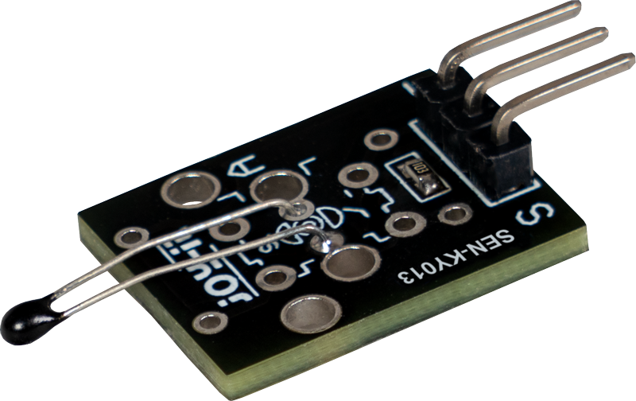
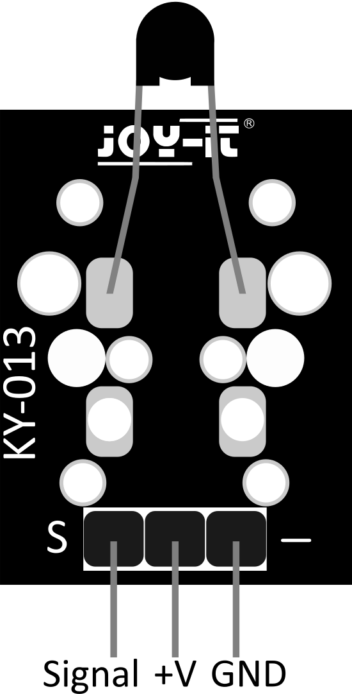
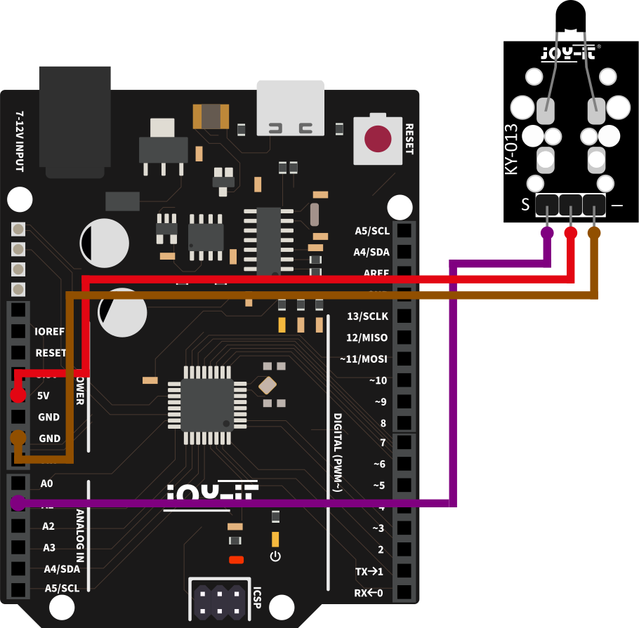

11. Dezember 2026
Wie kalt ist es am Fenster?
Mollig warm drinnen, eisig draußen? Der NTC-Sensor misst den Unterschied.
Heute im Säckchen
KY-013 Temperatursensor (NTC)
Dieses Modul beinhaltet einen NTC Thermistor welcher Temperaturen im Bereich von -55°C bis zu +125°C messen kann.

Dieses Modul enthält einen NTC-Thermistor, der Temperaturen im Bereich von -55°C bis +125°C messen kann. Ein NTC-Thermistor (Negative Temperature Coefficient) hat die Eigenschaft, dass sein Widerstand bei steigender Temperatur abnimmt. Diese Änderung des Widerstandswerts ermöglicht es, die entsprechende Temperatur zu berechnen.
Die Beziehung zwischen Temperatur und Widerstand ist nicht linear, kann jedoch mathematisch angenähert werden. Durch die Verwendung eines Spannungsteilers kann die Änderung des Widerstands ermittelt werden. Ein Spannungsteiler besteht aus einem bekannten festen Widerstand und dem variablen Widerstand des Thermistors. Wenn eine Spannung an den Spannungsteiler angelegt wird, teilt sich die Spannung entsprechend den Widerstandswerten auf. Durch das Messen der Spannung über den Thermistor kann der aktuelle Widerstand berechnet werden.
Diese Widerstandswerte lassen sich dann in Temperaturen umrechnen. Die genaue Berechnungsmethode und der mathematische Ansatz zur Bestimmung der Temperatur sind in den beigefügten Codebeispielen beschrieben. Dieses Modul ist ideal für Anwendungen, bei denen präzise Temperaturmessungen erforderlich sind, wie z.B. in Klimasteuerungen, Überwachungssystemen und anderen temperaturabhängigen Prozessen. Durch seine hohe Genauigkeit und den breiten Messbereich bietet es eine zuverlässige Lösung für viele Temperaturmessaufgaben.  
| Technische Daten | |
|---|---|
| Betriebsspannung | 3,3 V - 5 V |
| Messbereich | –55°C bis +125°C |
| Messgenauigkeit | ± 0,5 °C |
| Bekannter Widerstand | 10 kΩ |
| Spezifischer Widerstand des NTC | 3950 Ω |
Anschlussbelegung


| Arduino | Sensor |
|---|---|
| A1 | Signal |
| 5 V | +V |
| GND | GND |
Man kann auch einen ADC wie der KY-053 verwenden. Dieser ADC hat eine höhere Auflösung als der interne ADC vom Arduino, was dazuführt, dass der Sensor genauer ausgewertet werden kann.
Weihnachtsidee zum Bauteil
Weihnachtsidee: Drinnen mollig, draußen eisig
Beim Einschalten merkt sich der Sketch die Zimmertemperatur. Hältst du den Sensor danach an die Fensterscheibe oder kurz vor das geöffnete Fenster, zeigt der Serielle Monitor, wie viel kälter es dort ist, von „mollig warm“ bis „eisig“.
Verdrahtung
Wie im Abschnitt zum Bauteil oben: Signal an A1, +V an 5V, GND an GND.
Ablauf
Einmal pro Sekunde rechnet der Sketch den Messwert wie im Artikel in eine Temperatur um und zeigt den Unterschied zur Zimmertemperatur in Kelvin. Bis 2 K kälter gilt als mollig, bis 8 K als zugig, darunter als eisig. Starte den Sketch im warmen Zimmer, damit der Vergleichswert stimmt.
Deine Knobelaufgabe
Im Sketch fehlt der Inhalt der loop()-Funktion. Die Kommentare darin verraten dir, was passieren soll – programmiere es selbst! Die Auflösung findest du morgen ganz unten auf der Seite von Türchen 12.
// Türchen 11: Drinnen mollig, draußen eisig
// Verdrahtung wie im Artikel KY-013 (Signal an A1)
const char ART[] PROGMEM = R"ART(
_______________
| * | * |
| * * | * * |
|_______|_______|
| * | * |
| * * | * * |
|_______|_______|
Tuerchen 11: Drinnen mollig, draussen eisig
)ART";
const int ntc = A1; // KY-013
float zimmer; // Temperatur beim Einschalten gilt als Zimmertemperatur
float temperatur() {
// Umrechnung wie im Artikel: Spannungsteiler, dann Beta-Formel (B = 3950)
int raw_value = analogRead(ntc);
float voltage = raw_value * 5.0 / 1023.0;
float r = ((voltage / 5.0) * 10000.0) / (1.0 - (voltage / 5.0));
float t = 1.0 / ((1.0 / 298.15) + (1.0 / 3950.0) * log(r / 10000.0));
return t - 273.15;
}
void setup() {
pinMode(ntc, INPUT);
Serial.begin(9600);
Serial.println((const __FlashStringHelper*)ART);
zimmer = temperatur();
Serial.print("Zimmertemperatur gemerkt: ");
Serial.print(zimmer, 1);
Serial.println(" C. Jetzt den Sensor ans Fenster halten!");
}
void loop() {
// Die aktuelle Temperatur mit der gemerkten Zimmertemperatur vergleichen
// und je nach Unterschied „mollig“, „zugig“ oder „eisig“ melden.
}Das Grundlagen-Beispiel
KY-013 Temperatursensor (NTC)
Code-Beispiel
Das Programm misst den aktuellen Spannungswert am NTC, berechnet die Temperatur und übersetzt das Ergebnis in °C für die serielle Ausgabe.
Um das folgende Codebeispiel auf deinen Arduino zu laden, empfehlen wir die Verwendung der Arduino IDE. In der IDE kannst du den passenden Port und das richtige Board für dein Gerät auswählen.
Kopiere den unten stehenden Code in deine IDE. Um den Code auf deinen Arduino hochzuladen, klicke einfach auf den Upload-Button.
int ntc = A1; // Deklaration des Sensoreingangs-Pins
// Deklaration von temporäre Variablen
double raw_value;
double voltage;
double temperature;
void setup () {
pinMode(ntc, INPUT); // Initialisierung Sensor-Pin
Serial.begin(9600); // Initialisierung des seriellen Monitors
Serial.println("KY-013 NTC Temperatur Test");
}
void loop () {
// Analogen Wert auslesen
raw_value = analogRead(ntc);
// Mittels analogen Wert die Spannung auslesen
voltage = raw_value * 5.0 / 1023.0;
// Berechnung der Temperatur mittels der Spannung
temperature = ((voltage / 5.0) * 10000.0) / (1.0 - (voltage / 5.0));
temperature = 1.0 / ((1.0 / 298.15) + (1.0 / 3950.0) * log(temperature / 10000.0));
temperature = temperature - 273.15;
// Ausgabe des Messwerts
Serial.println("Temperatur: " + String(temperature) + " °C");
delay(1000); // 1 Sekunde auf nächste Messung warten
}Lösung für Tag 10 anzeigen
// Auflösung zu Türchen 10: Der Sternschnuppen-Detektor
// Verdrahtung wie im Artikel KY-054 (Signal an A5)
const char ART[] PROGMEM = R"ART(
*
. '
. '
. '
. '
Tuerchen 10: Der Sternschnuppen-Detektor
)ART";
const int light_sensor = A5; // KY-054, mehr Licht = höherer Messwert
const int SPRUNG = 80; // so viel heller als der Hintergrund gilt als Sternschnuppe
const char* const WUENSCHE[] = {
"Schnell was wünschen: weiße Weihnachten!",
"Schnell was wünschen: ein neues Arduino-Board!",
"Schnell was wünschen: Plätzchen ohne Ende!",
"Schnell was wünschen: Ruhe beim Löten!",
};
const int WUENSCHE_ANZAHL = sizeof(WUENSCHE) / sizeof(WUENSCHE[0]);
float hintergrund;
int schnuppen = 0;
bool hellVorher = false;
void setup() {
pinMode(light_sensor, INPUT);
Serial.begin(9600);
Serial.println((const __FlashStringHelper*)ART);
randomSeed(analogRead(A0)); // offener Analogeingang liefert zufälliges Rauschen
hintergrund = analogRead(light_sensor);
Serial.println("Licht aus und mit einer Taschenlampe kurz über den Sensor huschen.");
}
void loop() {
int wert = analogRead(light_sensor);
bool hell = wert > hintergrund + SPRUNG;
if (hell && !hellVorher) {
schnuppen++;
Serial.print("Sternschnuppe Nr. ");
Serial.print(schnuppen);
Serial.print("! ");
Serial.println(WUENSCHE[random(WUENSCHE_ANZAHL)]);
}
hellVorher = hell;
// Hintergrund nur langsam nachführen, damit ein kurzer Blitz ihn nicht verschiebt
if (!hell) {
hintergrund = hintergrund * 0.98 + wert * 0.02;
}
delay(10);
}